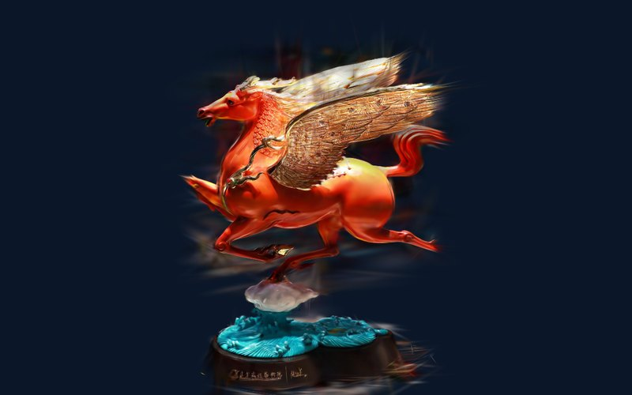
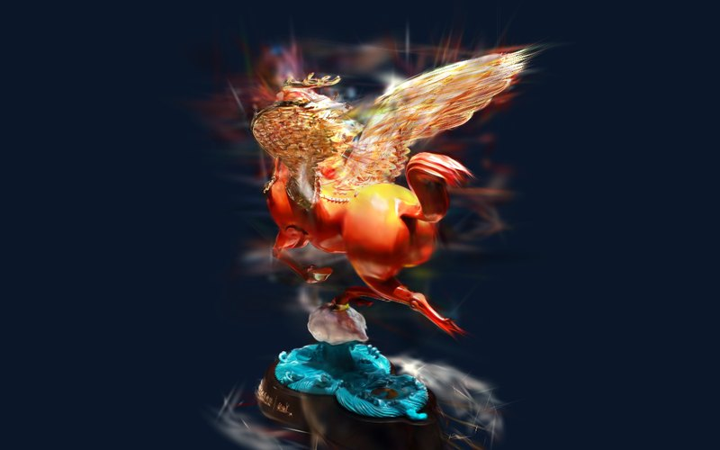

中艺堂 · Zhongyi Tang · 3D Demo
Golden-Winged Horse
金翼天马 · 三维演示 (作品名为暂名,待公司确认)
用展厅里随手绕展柜拍的 20 张照片,还原出这件作品的三维模型。下面两个演示用的是同一个模型:一个可以自己拖着转,一个跟着网页滚动自动绕一圈。

演示一 · Free view
自由查看
拖动旋转、滚轮缩放、凑近看金翼。停手几秒后作品会自己慢慢转。

演示二 · Scroll to orbit
滚动环绕
网页往下滚,镜头绕作品转一圈;往回滚,倒着转。右侧金线显示转到了多少度。
20张展厅照片(两圈 × 10 个角度)
—个高斯点
—MB 模型大小
0帧视频:每一帧都是实时画的
和网站上现有的"滚动转台"(序列帧)比:序列帧只能沿拍摄路线来回放,这里镜头可以停在任何角度、任何远近。 代价是隔着展柜玻璃拍摄,作品周围会有少量反光留下的雾影;正式拍摄时去掉玻璃、多拍一圈高角度,效果会明显更干净。